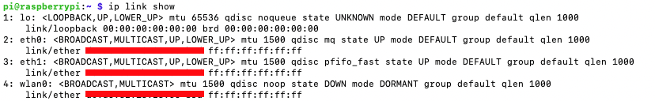
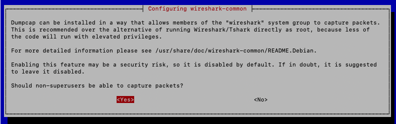

Packetwall Project
March 00, 2021

At a conference, Laura Chappel talked about a wall she had with lava lamps that light up when certain packets pass her network. I recalled it and said, why not make it and write about it?
Equipment Purchases
- Raspberry Pi (any with GPIO pins will work). I had a Pi 3B doing nothing with a 32 GB sd card.
- RexQualis Electronics Component Fun Kit (found on Amazon for $15.19)
- SharkTapUSB Ethernet Sniffer (found on Amazon for $249.95)
- Adafuit Quad Level Shifter (found on Amazon for $4.80)
Setting up the Raspberry Pi
install raspbian os on sd card
Set up SSH on the boot partition
ssh into the pi and verify that the sharktap is recognized as a NIC
The new nic is seen as "eth1"
Capturing Traffic with Tshark
Installing tshark with apt
say yes to this prompt
set up ring buffer
Save to NAS to prevent too much I/O from burning the sd card
install nfs-common if its not installed already
using this site as reference, we will connect our pi to the NAS.
note that what is eventually displayed by the LED lights is delayed since we are writing to a file and reading it in the next step.
Converting Captured Data
read capture, get statistics for each display filter
LED Configuration
Using this page as reference, we can make a program similar to light up LEDs based on our rules
Using this page as reference, we can build the schematics for the actual build.